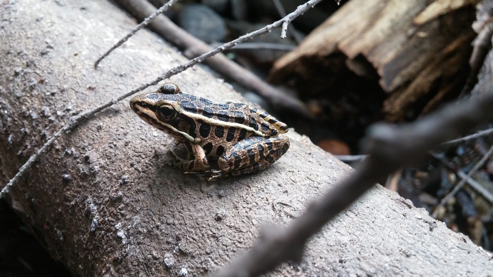

Braeden Smith
I'm a 15 year old who loves programming and computer science. Currently I'm a sophmore at Staples High School in Westport CT. I have experince in a variety of progamming languages and I consider my self proficient in Ruby, Processing, Bash, JS, and jQuery. I also have limted experince in Python and Java.
I'm currenly taking a wide vartiey of courses at Staples, including AP Computer Science, Chemistry Honors, Pre-Calculus, Latin II honors, and English II. I spend most of my extracircular time particpating on the Electrics/Lighting Crew of Staples as a crew head and technication - See some of our productions here. The work involves regular use electronics and electronic repair, a detailed knowledge of the ETC EOS programming, lots of expeirnce as a followspot operator and hanging and focusing a lots of different lighting fixtures. I have also learned lighting design fundementals and this year I will both design a lighting plot in VectorWorks, hang/focus a full rig and design a show. I regually work anywhere from 15-30 hours a week there.
Every Friday for approximately 3 years now, I have volunteered at The Westport Pulic Library helping with their free tech support to the community. We are often very busy and have to solve a wide range of problems ranging from simple email setup to OS reinstallation. I have gained a lot of experince over the years, and I think I'm adept enough to problem solve most issues. When I'm not working on Lights or Volenteering, I love to program or take photos in my free time.
